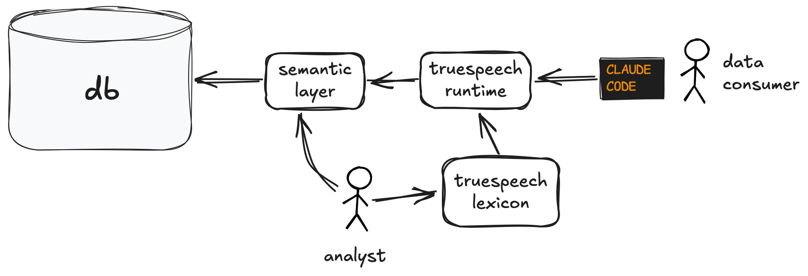

True Speech
truespeech Regions
truespeech is a language for codifying and automating aspects of your analytics practice. The initial release supports regions — annotations that mark parts of your database with curated context. Accumulated incrementally, they become living documentation that surfaces automatically alongside relevant queries.
Documenting last summer's bot attack
An analyst uses truespeech to record the event. Subsequent queries automatically include the analyst's warning alongside the results, when relevant.
ts> register region bot_attack_july impacting total_signups over 2025-07 with "Credential-stuffing campaign inflated signups." ✓ Registered "bot_attack_july" with 1 impact # ...later... ts> compute total_signups over 2025 group by month order by month ┌─────────┬───────────────┬─────────────────────────────┐ │ month │ total_signups │ note │ ├─────────┼───────────────┼─────────────────────────────┤ │ 2025-05 │ 14820 │ │ │ 2025-06 │ 13560 │ │ │ 2025-07 │ 48910 │ ⚠ bot_attack_july · 2025-07 │ │ 2025-08 │ 14102 │ │ └─────────┴───────────────┴─────────────────────────────┘ (4 rows shown, May–Aug) ⚠ Reconciliation: 1 lexicon entry overlaps this region • bot_attack_july (total_signups) "Credential-stuffing campaign inflated signups."
Core Concept: Regions
A region is a contiguous slice of your data, defined in terms of the semantic layer's dimensions. Concretely: a conjunction of predicates over those dimensions. The metric's primary time dimension gets a convenient mini-language so the common case stays terse.
ts> register region holiday_promo impacting orders over 2024-Q4 with "Holiday discount campaign." ts> register region eu_outage impacting orders over 2025-03-14 to 2025-03-16 with "EU fulfillment center down." ts> register region b2b_price_test impacting average_order_value over since 2025-01-15 and segment = 'b2b' with "B2B price test, indefinite duration." ts> compute orders over since 2025-01-01 group by month ts> compute orders over 2025-Q1 and channel = 'paid' and country = 'DE' ts> compute orders over all time and product_tier = 'enterprise'
register region
- Adds one entry to the lexicon: a curated fact about a region of the data, with a natural-language description.
- Scoped to one or more affected metrics — the entry surfaces only on queries that touch them.
- The
regionkeyword names the entry's kind. Today onlyregionis defined; the lexicon is designed to grow as more shapes (boundaries, cycles) are added.
# grammar register region <name> impacting <metric>[, <metric>...] over <time-expr> [and <predicate>...] with "<description>" # example — every slot used register region de_pricing_q1 impacting orders, churn over 2025-Q1 and country = 'DE' and tier = 'enterprise' with "Q1 enterprise price test; orders and churn both affected."
compute
- Runs a metric query over a region — same region syntax as
register region. - Adds the SQL-style modifiers
group by,order by, andlimitfor shaping the result. - Every
computeis automatically reconciled against the lexicon — that's the engine that produced the annotation in the opening example.
# grammar compute <metric> over <time-expr> [and <predicate>...] [group by <dimension>[, <dimension>...]] [order by <column> [asc|desc]] [limit <n>] # example — every slot used compute signups over 2025-Q4 and country = 'US' group by month, channel order by signups desc limit 10
check
- Queries the lexicon directly — no database hit, no metric computation.
- Returns matching lexicon entries with the actual region overlap computed.
- Useful when you want to ask "what do we know about this slice of the data?" without pulling the numbers.
# grammar check <metric> over <time-expr> [and <predicate>...] # example — every slot used check signups over 2025-Q3 and country = 'US'
The big picture

The truespeech runtime sits in front of the semantic layer, mediating all queries, automatically finding relevant context from the lexicon and surfacing it alongside the query results for humans and agents alike.
Analysts have two levers for managing the analytics practice: the semantic layer, which maps business data concepts to SQL, and the truespeech lexicon, which remembers additional layers of nuance around specific regions.
Learn more
Open the sandbox → Language reference →truespeech is a broader project — see the project home or follow the work on GitHub.